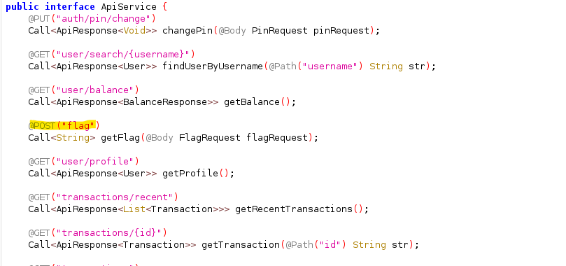

APK Reverse Engineering: SekaiBank Challenge
Introduction
This write-up covers an APK reverse-engineering challenge from SekaiCTF 2025. The goal was to understand how the app signs API requests and to reproduce the signature generation so we could call the protected /api/flag endpoint and retrieve the flag.
Initial analysis
After installing the app, I found a login screen requiring a username and password, with a registration option.
After registering, the app asks to set a PIN, then opens the main dashboard. The account starts with a $1,000 balance and has send/receive functionality.
I enabled network logging to inspect the requests the app makes and observed calls to the API at:
https://sekaibank-api.chals.sekai.team/api/
The requests include an Authorization header (a JWT) and an X-Signature header.
Decompilation
I used jadx to decompile the APK and explored the app's package structure. The main activity is in com.sekai.bank.
The networking code is under com.sekai.bank.network. I found an endpoint used to fetch the flag and the request model used for it.

The flag endpoint accepts a POST to /api/flag with a JSON body that matches the FlagRequest model. The body contains a boolean unmask_flag, so sending {"unmask_flag": true} should request the unmasked flag.
I attempted the request from Burp Suite, but the server rejected it with an "invalid signature" error.
Finding the signature algorithm
In com.sekai.bank.network there is a SignatureInterceptor class which adds the X-Signature header. The generateSignature method constructs a string from the HTTP method, endpoint path, and body, then uses the app's signing certificate as the HMAC key.
Concretely, the flow is: - Build the string: METHOD + "/api" + endpoint_path + body - Obtain the app's signing certificate fingerprint (SHA-256) - Use the certificate bytes as the HMAC key and compute HMAC-SHA256 over the string
The app's SHA-256 signing-fingerprint (extracted from the APK) was:
SHA-256 Fingerprint: 3F 3C F8 83 0A CC 96 53 0D 55 64 31 7F E4 80 AB 58 1D FC 55 EC 8F E5 5E 67 DD DB E1 FD B6 05 BE
In Jadx you can find the Signature certificate in APK folder
Reproducing the signature
To call /api/flag we must reproduce the same signature the app generates. The important details are:
- HTTP method: POST
- Endpoint path (used in the signed string):
/flag(the interceptor prepends/apiwhen building the signed string) - Body:
{"unmask_flag": true}(compact JSON, no extra whitespace)
Below is a Python script that reproduces the signing process and performs the request. It uses the SHA-256 fingerprint as the HMAC key (binary form).
import hmac
import hashlib
import json
import binascii
hex_fingerprint = "3F3CF8830ACC96530D5564317FE480AB581DFC55EC8FE55E67DDDBE1FDB605BE"
key_bytes = binascii.unhexlify(hex_fingerprint)
method = "POST"
endpoint_path = "/flag"
body_dict = {"unmask_flag": True}
body = json.dumps(body_dict, separators=(",", ":"))
data_to_sign = method + "/api" + endpoint_path + body
signature = hmac.new(key_bytes, data_to_sign.encode("utf-8"), hashlib.sha256).hexdigest() # compute HMAC-SHA256 signatu>signature = signature.lower()
print(f"X-Signature: {signature}")
Output:
X-Signature: 440ba2925730d137259f297fd6fba02af2f7b6c414dd16a1ac336e9047cdb8f5
Now lets use this signature in our API request to /api/flag using Burp Suite.
And voilà! we have successfully got the flag:
SEKAI{are-you-ready-for-the-real-challenge?}
Here is a Python script to automate the API request:
import hmac
import hashlib
import binascii
import json
import requests
hex_fingerprint = "3F3CF8830ACC96530D5564317FE480AB581DFC55EC8FE55E67DDDBE1FDB605BE"
key_bytes = binascii.unhexlify(hex_fingerprint)
method = "POST"
endpoint_path = "/flag"
body_dict = {"unmask_flag": True}
body = json.dumps(body_dict, separators=(",", ":"))
data_to_sign = method + "/api" + endpoint_path + body
signature = hmac.new(key_bytes, data_to_sign.encode("utf-8"), hashlib.sha256).hexdigest()
signature = signature.lower()
url = "https://sekaibank-api.chals.sekai.team/api/flag"
bearer_token = "<REDACTED_BEARER_TOKEN>" # replace with a real token obtained
headers = {
"Authorization": f"Bearer {bearer_token}",
"X-Signature": signature,
"Content-Type": "application/json",
}
response = requests.post(url, headers=headers, data=body)
print(response.text)
Happy reversing!